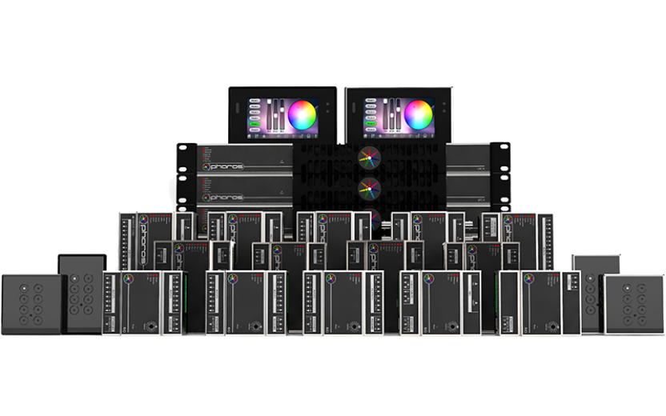

Here at Moda, our DMX fixtures communicate using the universal DMX 512 protocol. This allows our clients to use their own control systems, or utilize any of our already compatible systems. From the simplicity and power provided by the Kandi Touch, to the scalable and versatile Pharos Lighting system, we can make any design a reality.

Kandi Touch
Kandi Touch is a wall mounted DMX 512 controller. Its touch sensitive color display allows for easy selection of up to 500 scenes across 10 zones. It has multi universe control and can easily manage color dimming or speed of a scene through the color wheel with a simple touch.
The Pharos TPC is an elegant lighting controller with a customizable, 4.3″ capacitive touch screen, 512 channels of DMX output and vast interfacing potential, all over a single Power-over-Ethernet (PoE) network connection. TPCs are available in a range of different colored bezels and overlays.
The Pharos LPC is an award-winning, all-in-one control solution for themed entertainment and LED lighting installations. It features individually controllable and independently running timelines and scenes, letting you build dynamic, precise, fully customizable pre-programmed lighting effects with the freedom of real-time manual overrides and the versatility of powerful show control and integration features.
The Pharos VLC is an extremely capable and cost effective solution for large LED pixel arrays; such as building façades, bridges, and presentation walls. It makes it simple to play video content across your array, either from locally stored HD media files or a DVI-D video input. It also offers a range of creative, generative effects and the versatility of powerful show control and integration features...
The VLC is a rugged 1U 19” rackmount unit with separate Gigabit Ethernet ports for management and DMX-over-Ethernet (eDMX) output. It is available in multiple variants with capacities ranging from 25,600 channels up to a massive 768,000 channels from a single unit, with further scaling by using multiple Controllers connected and synchronized over Ethernet. The VLC extends the Pharos range of Controllers as an alternative to the industry-leading Pharos LPC X. While the LPC X provides highly flexible lighting control for large multi-zone lighting systems, the VLC is capable of controlling even larger systems where the fixtures are arranged and controlled as a single array, at our lowest ever price per channel. The VLC is an exciting new option at the heart of the fully scalable Pharos system that can be tailored to the needs of your project, with additional integration options supported by our range of Remote Devices. The VLC is programmed using the free Pharos Designer 2 software and existing installations can be managed from anywhere using its built-in web server.
The Pharos LPC X offers an extreme level of power and integration, making it an ideal solution for landmark lighting installations with significant channel counts. It integrates with the full range of Pharos products and offers an optional real-time video input. The LPC X is a rugged 1U 19” rackmount unit with separate Ethernet interfaces for management and DMX-over-Ethernet (eDMX) output...
It is available in capacities ranging from 10 DMX universes (5,120 channels) up to 100 DMX universes (51,200 channels) from a single unit, with further scaling by using multiple Controllers connected and synchronised over Ethernet. As the big brother of the compact Pharos LPC, it is at the heart of a fully scalable Pharos system that can be tailored to the needs of your project. Additional integration options are supported by our range of Remote Devices. The LPC X is programmed using the free Pharos Designer 2 software and existing installations can be managed from anywhere using its built-in web server.